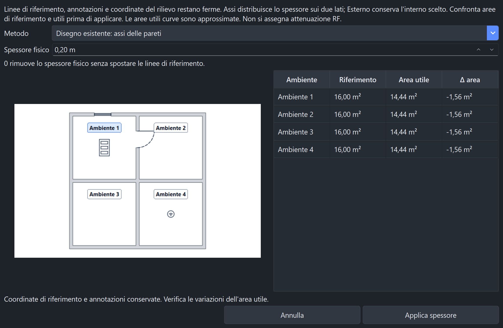

La conversione ora distingue le misure interne dalle linee di riferimento. Una pianta con corridoi e locali racchiusi può ricevere pareti fisiche mantenendo ferme le coordinate, con variazioni dell'area utile visibili prima di applicare.
| Metodo | Comportamento |
|---|---|
| Conserva misure interne | Cresce all'esterno; può traslare gli ambienti collegati e i loro contenuti. Conserva forme e aree interne. Segnala gli ambienti coinvolti quando i vincoli sono incompatibili. |
| Disegno esistente: assi delle pareti | Linee ferme, metà spessore su ciascun lato. Supporta anche ambienti racchiusi e divisori curvi. L'area utile diminuisce in modo dichiarato. |
| Esterno dell'ambiente scelto | Si seleziona il contorno di un ambiente da proteggere. Lo spessore cresce all'esterno; gli spazi confinanti possono perdere area utile. Un'invasione dell'interno protetto viene rifiutata. |
| Mantieni riferimenti attuali | Modifica lo spessore conservando il profilo e il lato già assegnati. È la scelta iniziale alla riapertura di proprietà convertite. |
La conversione mantiene ferme annotazioni, testi, posizioni AP e punti RF. Zero elimina il materiale senza muovere le linee di riferimento. L'applicazione è unica e annullabile.

L'area di riferimento resta quella analitica del contorno originale. L'area utile sottrae il materiale strutturale prima dei tagli delle aperture, senza sottrarre mobili. Le aree derivate che coinvolgono curve sono approssimate e marcate con ≈.
Se una piccola regione è completamente occupata dalle pareti, la tabella la segnala: le linee restano nel documento e tornano a delimitare spazio libero riducendo o rimuovendo lo spessore.
Non è possibile conservare simultaneamente ogni misura interna e ogni coordinata di due locali che inizialmente condividono una linea senza spessore. La scelta del metodo rende esplicita questa differenza. Spessore e materiale RF restano concetti distinti.
Le prove sono state eseguite su copie isolate: conversione dell'intera struttura a più spessori, metodo esterno sui singoli ambienti, anteprima nativa, annulla/ripristina, salvataggio/riapertura ed esportazione A3. Gli originali sono stati confrontati tramite SHA-256 e sono rimasti invariati. Pianta e testi privati non sono inclusi in questo report pubblico.
È stato verificato anche il recupero del PNG generato assente usando i vettori e le dimensioni iniziali del foglio. Il recupero conserva calibrazione e coordinate e richiede un salvataggio per ricreare il PNG; non sostituisce immagini importate.
Conversione a riferimenti fissi: mediana 67,7 ms su 49 ambienti e 231,4 ms su 100 ambienti, tre esecuzioni sul computer di sviluppo. Misure complete, riproducibili con tools/benchmark_walls.py. Questi tempi riguardano il calcolo geometrico, non acquisizioni RF o stampa fisica.
Suite completa nativa sequenziale: 2.155 test e 479 sottotest superati (257,25 secondi, uscita 0). Copertura dedicata: 205 test su spessore, conversione e recupero immagini. Controlli UI nativi in 48 combinazioni: EN/IT/FR/ES, chiaro/scuro, 100/125/175%, metri/piedi. Anteprima ed esportazione della copia reale ispezionate. Controlli Ruff essenziali e F sui moduli fisici superati.
Le prove non equivalgono a una garanzia su qualsiasi input. Nessuna nuova libreria, versione eseguibile o stampa fisica è stata prodotta.